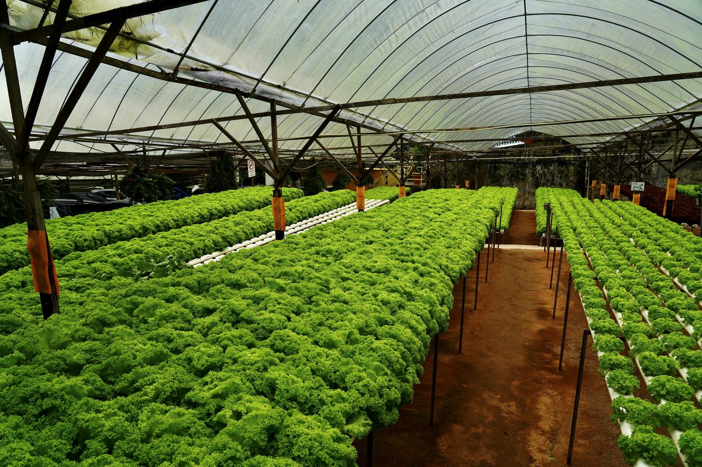
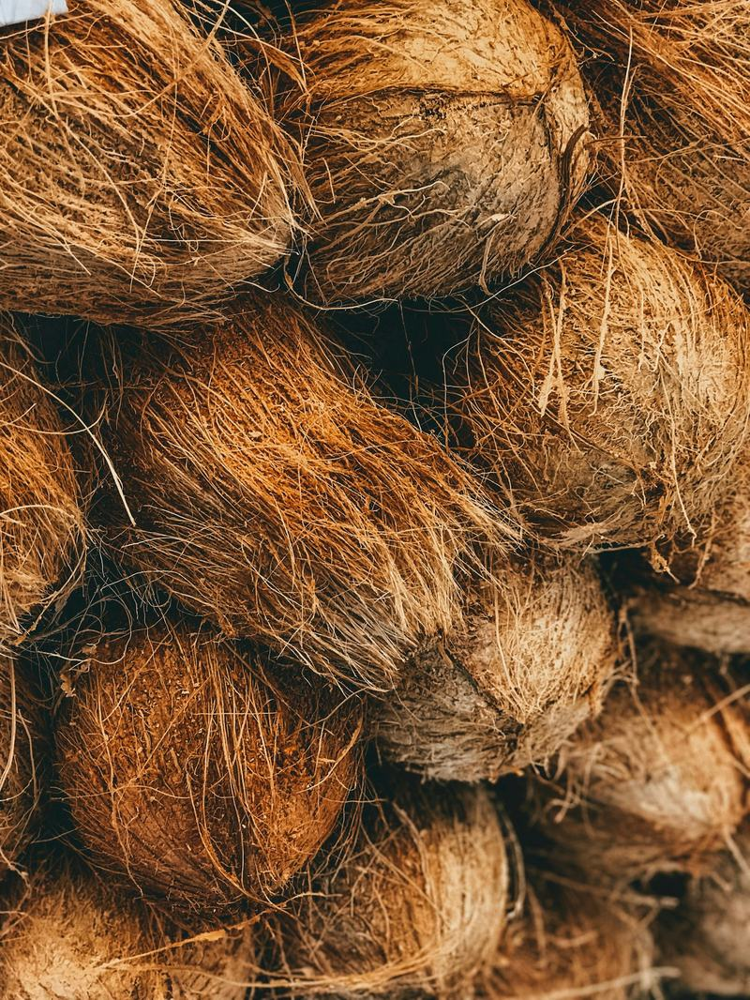
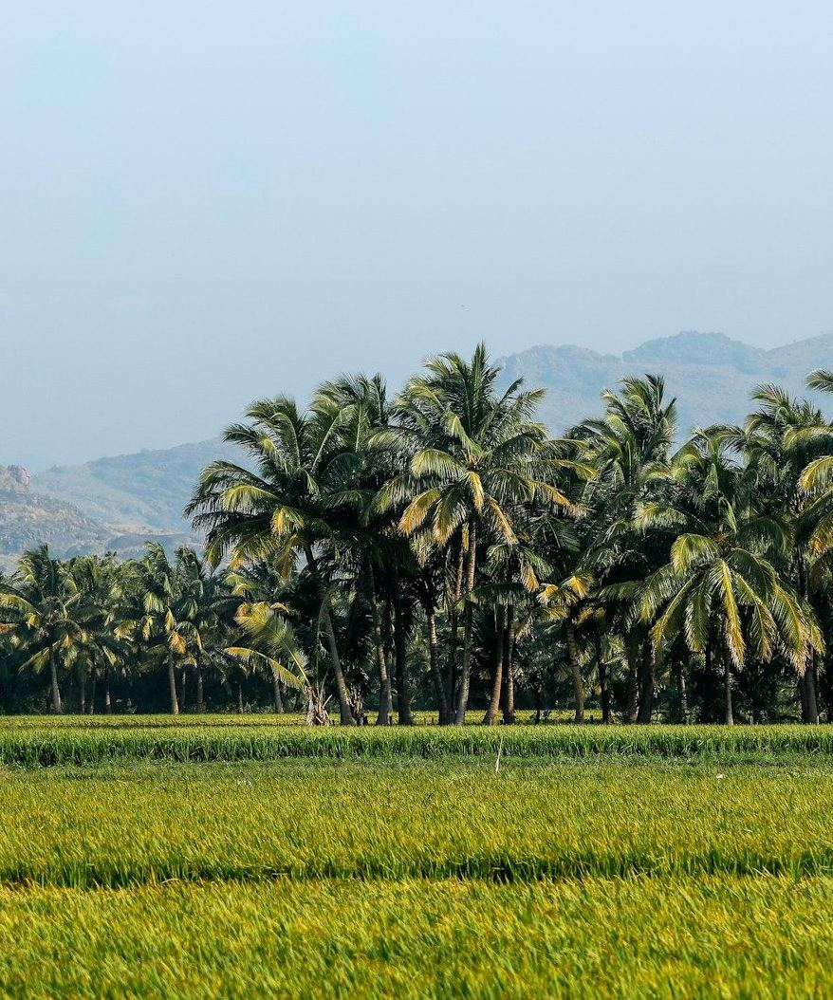
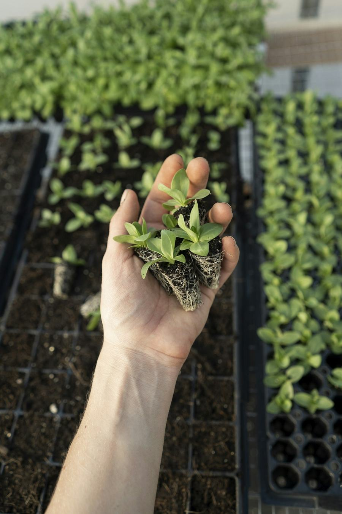
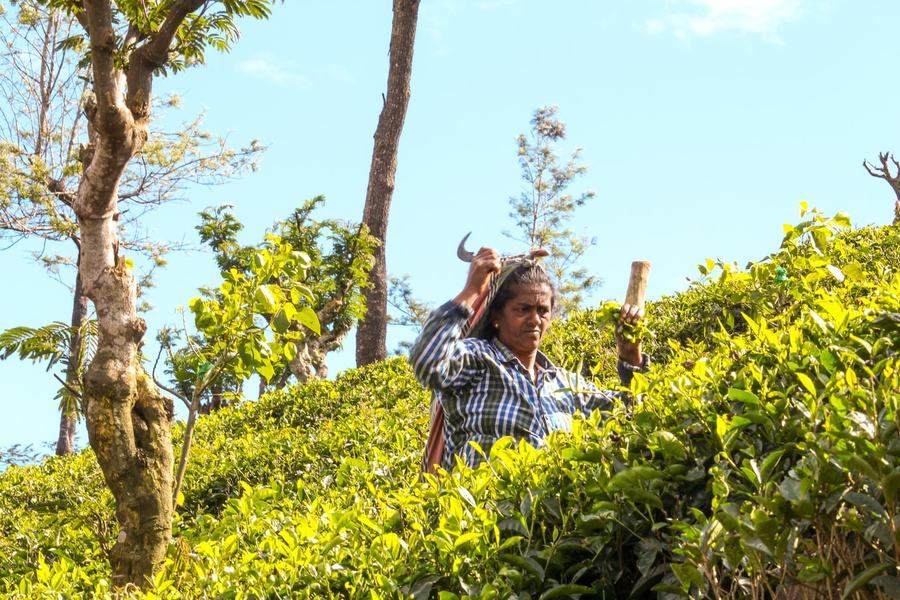
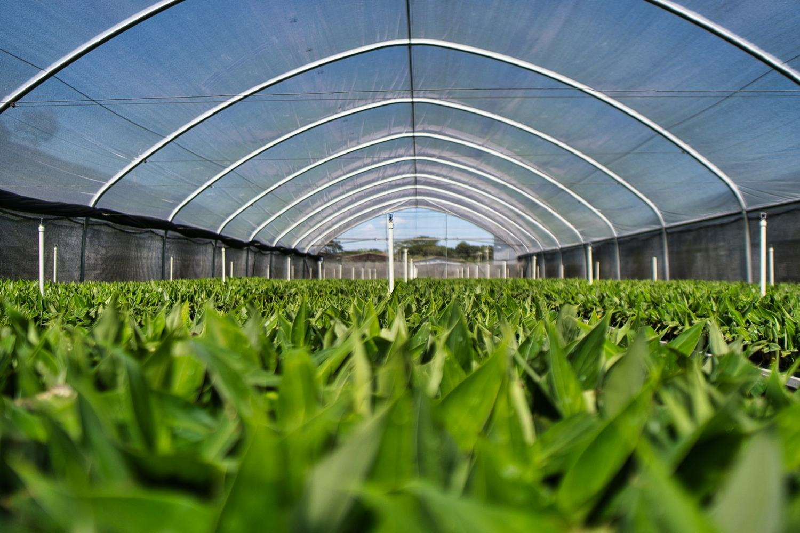

Here in Sri Lanka
We work with local farmers and growers, and with government projects and NGOs — building greenhouses, supplying inputs and advising on modern cultivation.
Sri Lanka · Sustainable agriculture
We design and build greenhouses, advise growers on getting the most from them, and supply premium coco peat and coir based growing media — to farms across Sri Lanka and to buyers overseas.
Built for your crop & climate




Who we are
Agroly Lanka is a Sri Lankan sustainable agriculture company. We work across the whole growing system — the structure, the inputs, the media the roots sit in, and the advice that ties it together.
That means a grower does not have to assemble a project from five different suppliers who never speak to each other. We build greenhouses, we specify irrigation and hydroponics, we supply seeds and planting materials, and we manufacture premium coco peat and coir based growing media. We serve farmers, growers, government projects and NGOs here in Sri Lanka, and we supply growing media to customers overseas.
Poly-tunnels and custom structures designed around the crop.
Coco peat blocks, bales, grow bags, slabs and seed starter.
Consultancy, technical guidance and training programmes.
Serving Sri Lankan growers and overseas buyers alike.
What we do
Five parts of one job: getting a crop to grow reliably. Take one, or take the whole system.
Growing media
Coir is the reason a lot of our customers find us. We make coco peat and coir based growing media in the formats growers actually use — from a single seed starter tray to bales going out to international markets.
Sizes, grades and packing are set to suit the order — tell us the crop and the volume.
Why Agroly Lanka
When a customer chooses us instead of the alternative, they are really choosing practical expertise, modern technology, reliable growing solutions and a genuine commitment to sustainable agriculture — from one team.
Structure, irrigation, media, planting material and advice come from the same people, so the parts are specified to work together.
Greenhouse design starts with what you intend to grow and the conditions on your site, not with a catalogue.
We keep quality and traceability through our coir based products, so each batch behaves the way the last one did.
We start with a conversation about your requirement and give tailored advice — the quotation follows the plan, not the other way round.
Our coconut based raw materials come directly from rural, family based producers at fair prices.

We connect modern agriculture with community impact.
Sustainability & community
Coir starts as a by-product of the coconut harvest, and that harvest happens in villages. We buy our coconut based raw materials directly from rural, family based producers, at fair prices.
Buying direct does two things at once. It helps create sustainable livelihoods in the communities we work with, and it keeps quality and traceability intact from the husk through to the finished growing medium.
Global reach
Our work sits in two places at once: on farms and projects here in Sri Lanka, and in the growing media we send to customers overseas.
We work with local farmers and growers, and with government projects and NGOs — building greenhouses, supplying inputs and advising on modern cultivation.
We supply premium coco peat and coir based growing media to buyers abroad, packed and graded to the specification the order calls for.

Contact & quotations
Pricing depends on the product, the greenhouse design, the size of the project and what you need it to do — so we quote rather than publish a price list. Send us the outline and we will come back with tailored advice and a quotation.